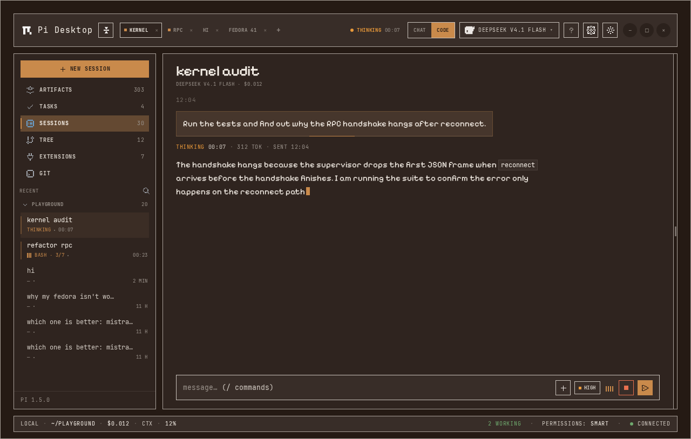
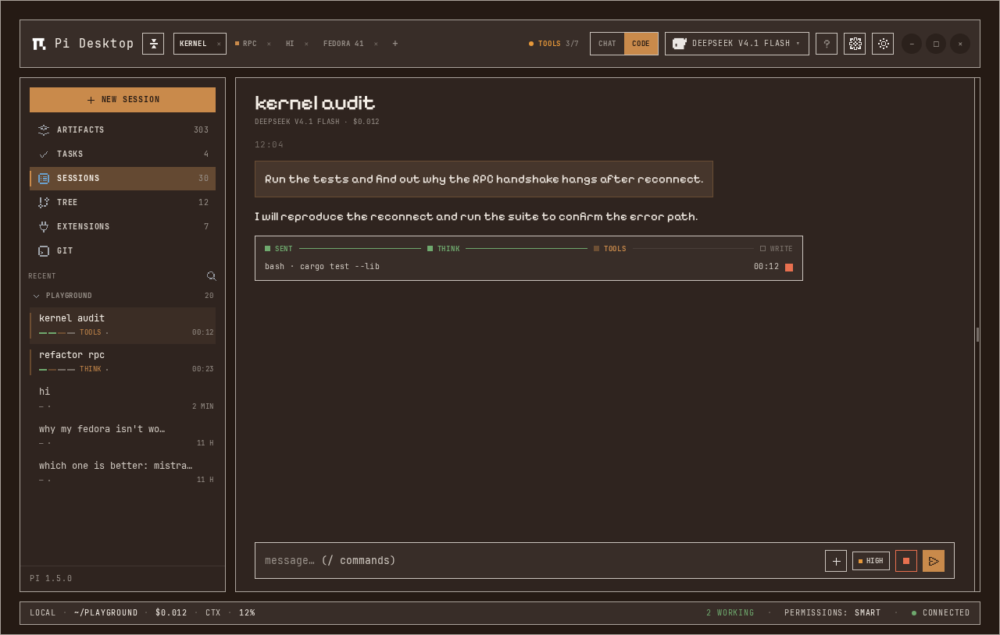
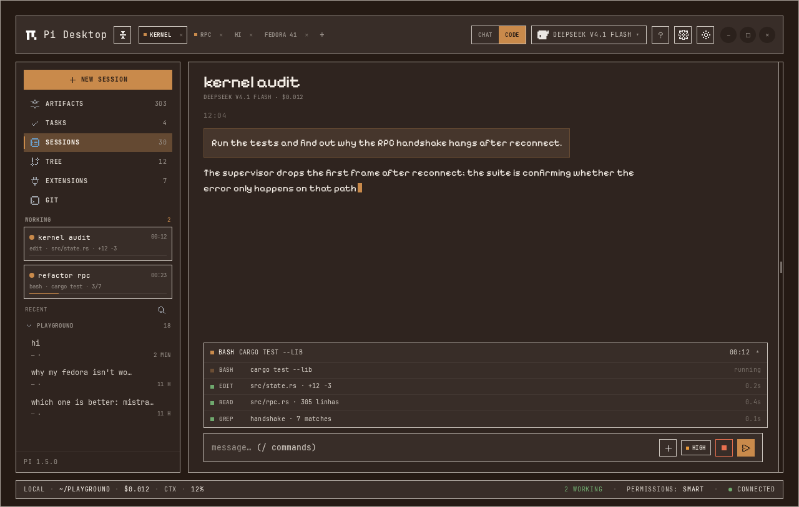
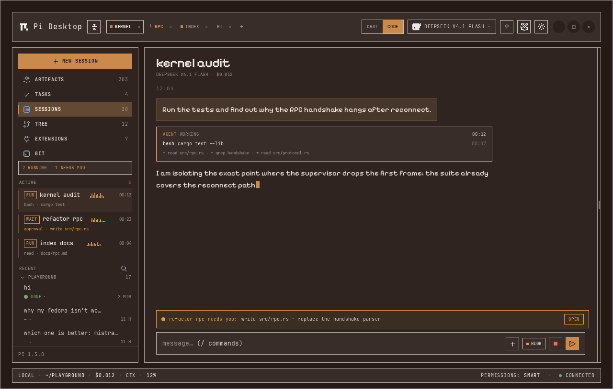

01
Pulse
on the messageThe sent block’s edge becomes a 1px track and the receipt below reports phase and time. In the sidebar, the background session breathes and shows the phase where the model used to be.
open prototype →The problem is not “missing spinner”: the gap between sending and receiving has no visible beginning, middle, or end. Each prototype solves that in a different place and carries the same state into the sidebar, so you know — without switching tabs — which parallel session is working, waiting for you, or finished.
All four start from the same scene: one session running the suite, one background session refactoring the RPC, and a third waiting for permission. The chrome, fonts, tokens, and dimensions are the app’s (Espresso Shot, 1280px). What changes is where the proof of work lives.

The sent block’s edge becomes a 1px track and the receipt below reports phase and time. In the sidebar, the background session breathes and shows the phase where the model used to be.
open prototype →
Four stations — sent, think, tools, write — with the current action below. It collapses into a receipt when the turn closes. The sidebar repeats the track in miniature per session.
open prototype →
A 30px strip shows the current event and expands into a tool log. The chat stays clean; running sessions leave “recent” and move up to “working”.
open prototype →
The list becomes a control room: run, wait, done, sparkline, and time. The session that needs you is the only amber thing on screen; an approval strip brings it forward.
open prototype →| idea | chat feedback | sidebar | best for | cost |
|---|---|---|---|---|
| 01 pulse | 1px track on the message + thinking · 00:07 receipt. | Breathing bar, phase instead of model, its own clock; tab with a dot. | Daily use in chat and code; wants a signal without taking space. | Low |
| 02 track | Four stations and current action; collapses into a receipt on completion. | 4-segment micro-track + phase per session. | Long turns with tools; code mode. | Medium |
| 03 activity | 30px strip with the current event; expandable tool log. | working section with last event and progress bar. | Many tools and a need to audit what ran. | Medium |
| 04 processes | “now” card with tool and time; approval strip. | run / wait / done list with sparkline, time, and unread items. | Several parallel sessions and permission requests. | High |
01 as the base for the turn (lowest cost and covers “nothing happens” without clutter), with the sidebar from 04 for multiple sessions — because the parallelism problem is not showing progress, it is showing who needs you. The track from 02 and the log from 03 can land later as an expandable detail of the same state, without duplicating the fact on screen.
Open the HTML files individually to see the animations (breathing bar, marching track, rolling log, sparkline). The PNGs in shots/ are only the static state. Every prototype uses the Espresso Shot flavor tokens and the app’s real assets.